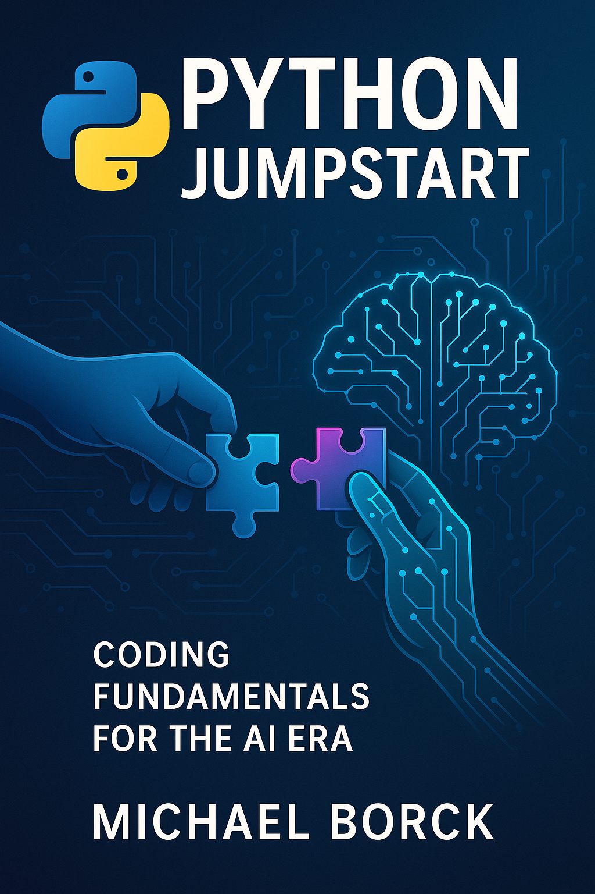

Python Jumpstart: Coding Fundamentals for the AI Era
1 The AI-Era Advantage

Welcome to “Python Jumpstart: Coding Fundamentals for the AI Era” - a comprehensive introduction to Python programming with a modern twist. This guide was created specifically for beginners who want to learn just enough Python to work effectively in today’s AI-assisted programming environment.
“Leverage AI assistants to debug code, explain concepts, and enhance your learning, mirroring real-world software development practices.”
This guide recognises that the landscape of programming is changing fast. While fundamentals remain essential, the ability to collaborate with AI—using it as a learning aid, coding partner, and productivity booster—is a crucial new skill.
“Python Jumpstart: Coding Fundamentals for the AI Era” is your gateway to Python programming, tailored for beginners who want to quickly become effective in a world where AI is part of everyday coding. You’ll master the basics, learn to work with AI tools, and gain practical skills that are relevant right now
1.1 🚀 Why Learn Python Today?
Because knowing the fundamentals of coding makes you 10x faster and smarter with AI tools tomorrow.
AI can write code, but it doesn’t always write the right code. If you blindly copy-paste, you’ll spend more time debugging than building.
But if you understand Python — even just the basics — you can:
- 🧠 Spot errors instantly instead of wasting time guessing
- ✍️ Tweak AI code to make it work for your needs
- 📣 Give better prompts so AI helps you, not hinders you
- ⚙️ Take control of your projects instead of relying on guesswork
This isn’t about becoming a full-time coder. It’s about becoming AI-literate, so you can collaborate with AI instead of depending on it.
Learn enough Python to lead the AI, not follow it.
1.2 What’s Inside
This interactive guide covers everything from basic Python syntax to more advanced topics like object-oriented programming. It has been updated to include:
- Traditional Python programming fundamentals
- Modern AI-assisted programming techniques
- Tips for using AI coding assistants effectively
- Examples of Python integration with AI services
1.4 How to Use This Guide
Each chapter builds upon the previous one, with interactive code examples you can run directly in your browser. You can follow along sequentially or jump to specific topics that interest you.
The guide is organized into several sections:
- Core Python Fundamentals: Basic syntax and concepts
- Functions and Control Flow: How to structure your code
- Data Structures and Iteration: Working with collections of data
- Working with Files: Input/output operations
- Code Quality: Debugging, testing, and organizing code
- Practical Python: How to run, install, and get help with Python
- Python in the AI Era: Using AI assistants and integrating AI into your Python apps
1.5 Getting Started
Jump right in with Chapter 1: Python in the Age of AI or browse the Table of Contents to find a specific topic.
1.6 Interactive Learning
This guide supports:
- In-browser code execution
- Copy/paste code examples
- Dark/light mode for comfortable reading
- Mobile-friendly format
Happy coding!